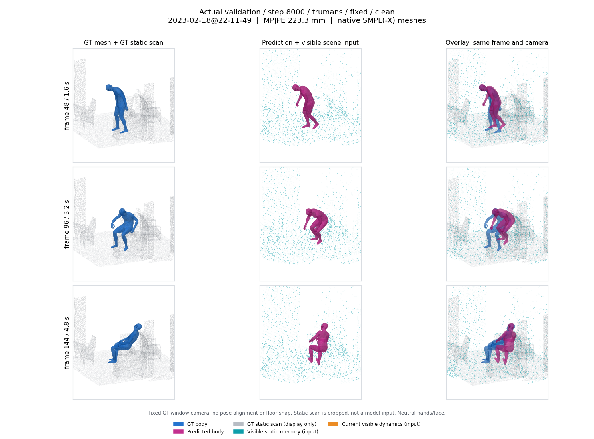
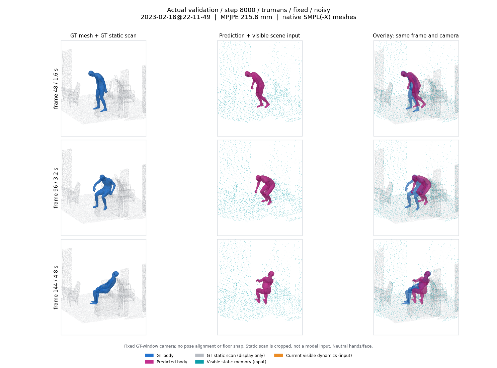
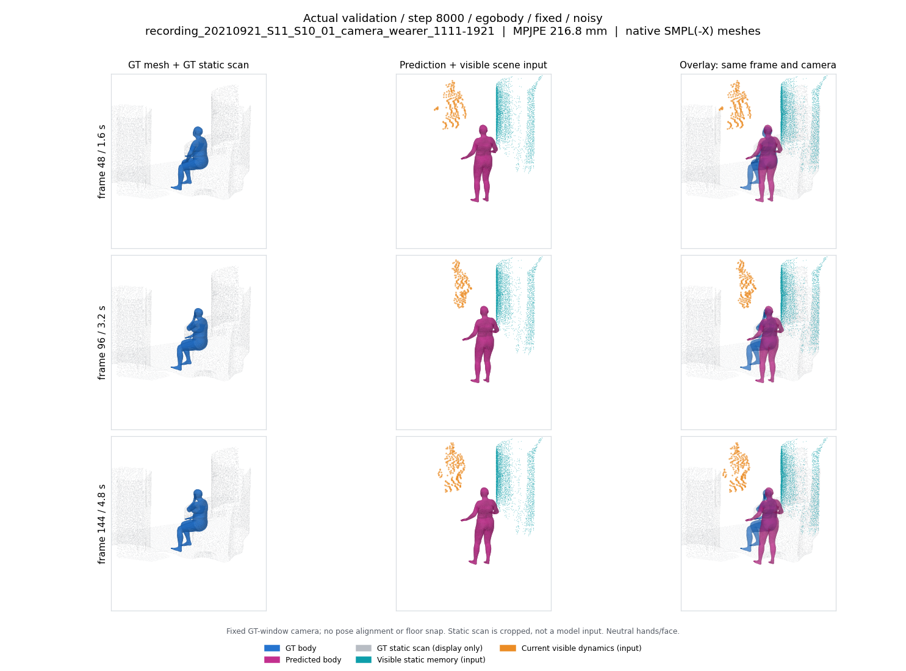
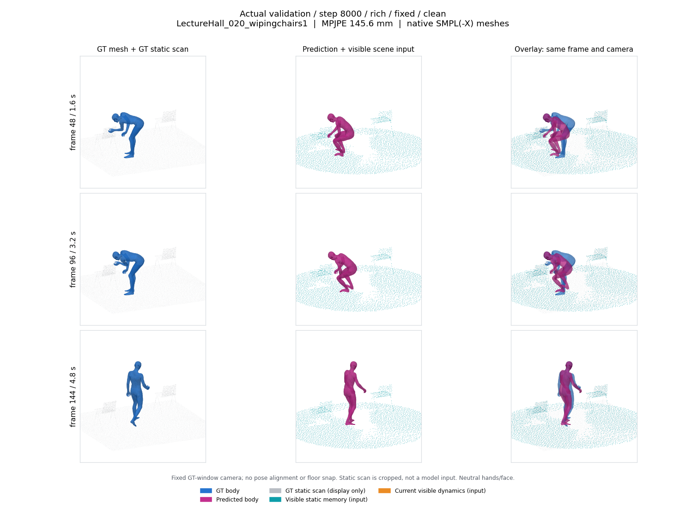
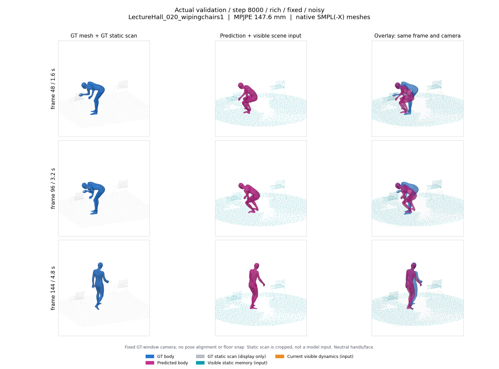
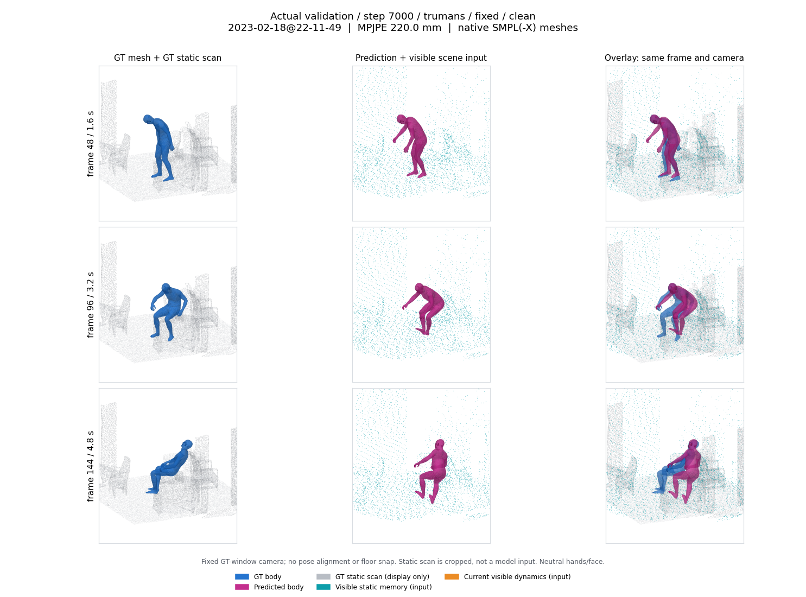
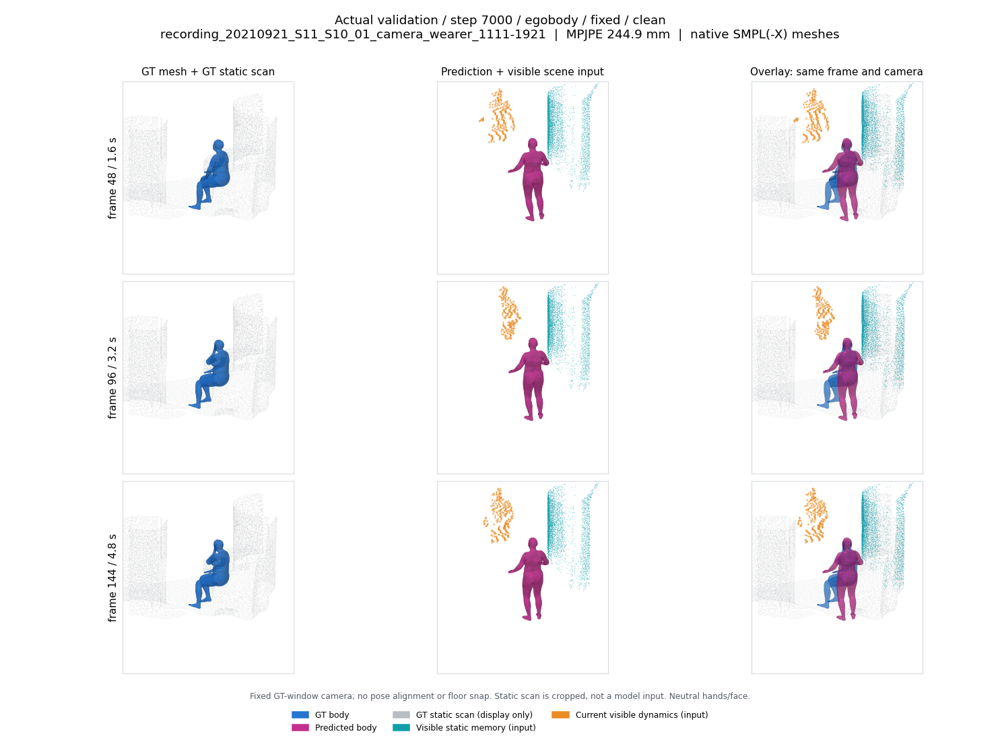
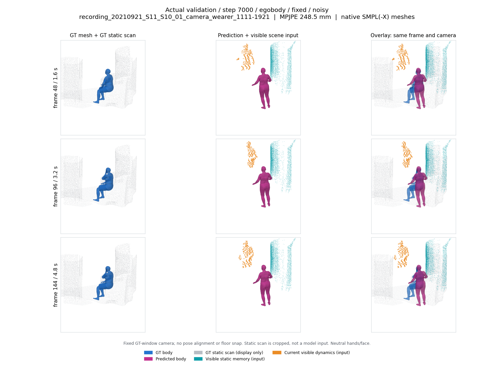
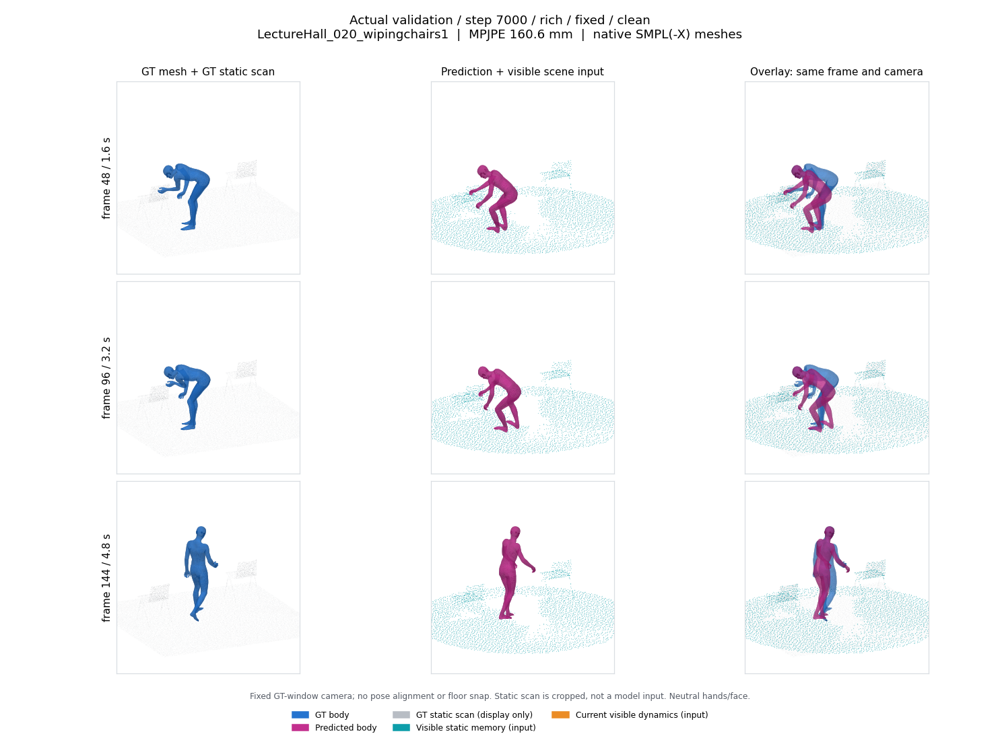
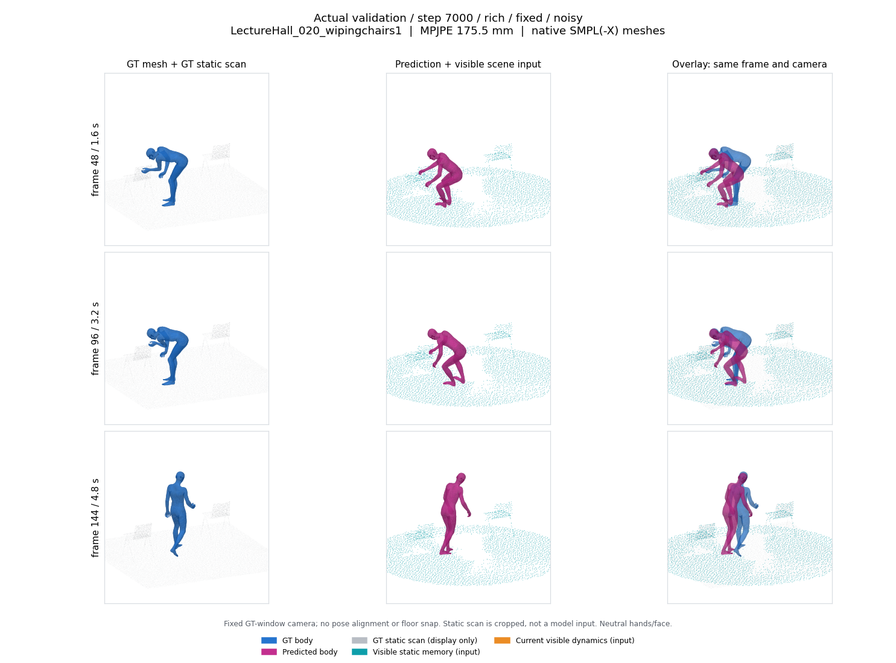

Native30 验证截图
蓝色 GT，洋红色预测；灰色 GT 静态扫描只用于显示，青色实际输入静态记忆，橙色是实际输入的局部可见动态表面；EgoBody 中是另一人的观测片段，不是预测目标，也不是完整人体 mesh。每张图同帧、同相机。新验证自动加入；刷新页面查看。
step 9000 / trumans / clean

step 9000 / trumans / noisy

step 9000 / egobody / clean

step 9000 / egobody / noisy

step 9000 / rich / clean

step 9000 / rich / noisy

step 8000 / trumans / clean

step 8000 / trumans / noisy

step 8000 / egobody / clean
step 8000 / egobody / noisy

step 8000 / rich / clean

step 8000 / rich / noisy

step 7000 / trumans / clean

step 7000 / trumans / noisy
step 7000 / egobody / clean

step 7000 / egobody / noisy

step 7000 / rich / clean

step 7000 / rich / noisy
